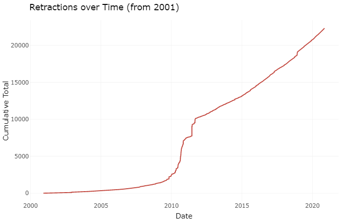

Aspects of Science may seem broken but not beyond repair
How the current review system contradicts the spirit of science and encourages misconduct as well as what can be done to remedy this.
In the year 2004, biologist, Woo-Suk Hwang was South Korea’s “Supreme Scientist.” He was idolized and admired for his cloning work. In groundbreaking articles published in Science, he claimed to have cloned human embryos and produced eleven stem cell lines from those embryos, potentially revolutionizing personalized medicine. At around the same time, Hwang’s lab also revealed the first cloned dog named Seoul National University Puppy, or the adorable acronym: Snuppy.
At the same time, he embodied a lot of what is still wrong with science: some images were found to be duplicates or only slightly modified versions, someone in the lab blew the whistle that Hwang’s cell lines were less abundant, and not from the cloned human embryos at all. A shining example of bioethics gone wrong, Hwang ultimately was sentenced for two years for purchasing human eggs in violation of South Korean laws and embezzlement of the equivalent of $700,000.
It turned out all but one of his claims was fraudulent. He admitted it. But a court found his actions did not meet the legal definition of fraud, which included using falsified data to earn grant money. After serving his two years, Hwang was allowed to go back to his work as a researcher, described as dedicated and remorseful in the eyes of the judge.
In the years since his disgrace, many prominent scientists accused of fraud found a similar fate-- caught but with little lasting consequence. This is where increased quality of peer review could catch fraud before it gets out into the world where it can have true impact.
At least the world got Snuppy out of Hwang’s “work.”
Now, over a decade later in 2020, we’re all getting a close-up firsthand view of science in action where the importance of a properly working system of vetting research has never been more crucial. Coronavirus research, pressured by a public yearning for information and politics, has been coming at us rapidly since scientists learned of its existence in 2019. We’ve seen the hydroxychloroquine both hailed as a potential cure by one research group and then denounced by other researchers not long after. And It’s no secret that COVID-19 has also been widely politicized. There has been a confusing whirlwind of messages from US leaders, pushing the FDA and CDC to promote other unproven treatments and misguided guidelines.
Scientific advancement is supposed to go through a rigorous review process. Yet this can take time and is often challenged by societal pressure for quick answers or conflict of interest, sometimes even by those who just want to up their reputation. For these reasons, scientific journals are riddled with retractions of previously published studies.
Whether an author is fraudulent or simply unresponsive, there’s a process in place to prevent a need for retractions. Retractions are a part of science, accepting that something may have been proven wrong, but they don’t need to be as prevalent as they currently are. However, the data surrounding retractions can provide some much needed explanation as to why this is happening and what could be done to prevent it in the future. A LOOK AT THE RETRACTIONS DATABASE SHOWS… HIGHLIGHTS OF YOUR FINDINGS HERE…>>>
We are still suffering from anti-vaccination research which dug its claws into society in the 1990s and remains a pest even following public denouncement of the author of the article and the retraction of the article itself.
As more fraudulent and incorrect papers are exposed as such, the cracks in the system become increasingly apparent. Science isn’t the apolitical machine it likes to present itself as. It isn’t fully broken, but it sure needs to be repaired.
The original systems in place were implemented to hold science to a higher standard, to hold scientists and their experiments accountable. Peer review is a crucial, yet sometimes frustrating, process where (ideally) impartial reviewers would read and critique a paper, giving comments and overall recommendation as to whether they believe it should be published. For a couple possible reasons, the journal article is either approved immediately after one round of review, or more likely, it is accepted under subsequent revision and resubmission - a much less appealing “R&R” than the traditional rest and relaxation version. However, revision and resubmission is still more practically appealing to many scientists than another R: replication.
The theory is that replication is something science strives for. Another scientist, given another’s article, methods and all, should in theory be able to replicate the experiment and its results within a reasonable degree. In practice, however, negative results and replication papers draw little attention and are therefore undesirable to editors. So living in these fields where it is often “publish or perish,” important information isn’t being published or studied much in the first place.
Also not appealing to working scientists is peer review, far from financially or career incentivized. Peer reviews end up being those who are knowledgeable in the relevant areas, contacted by editors to review an article that they’re interested in publishing to give it a once-over before revision and resubmission or even rejection.
Good science should be able to be replicated and reproduced, so as to prove that the conclusions made were not drawn from observations which occurred due to chance. Unfortunately, there is little in terms of incentive for replication experiments to be run by working scientists. There is also little incentive or funding to be a peer reviewer, leading it to move slowly even though it is a necessary part of modern science.
The potential frustration of peer review and replication, with additional external facts such as_, leads to a number of hacks, tricks, and misconduct which ultimately end in correction and the many retractions we are seeing.
Why So Many Retractions are Happening in the First Place
Not all retractions are cause of malicious intent. Retraction database Retraction Watch organizes their data into different “reasons”, ranging from the uncommunicative author not responding to potential concerns, conflict of interest, contamination of samples, plagiarism, to manipulation of data and images as well other ethical violations.
The draw toward fraud and misconduct may be seductive, there are cases like [insert that case] which clearly demonstrate so, but they can also be desperate. Their livelihood and their families may depend on publications with a high impact; they may be required to publish research to continue to practice medicine or be considered for promotion as has been the case in China.
The Search for Truth, Honor and the Spirit of Science
A common desire going into science is a search for the truth of the people, world, and universe around us-- to contribute to a greater understanding, some to a greater good.
Unfortunately, this becomes problematic when some scientists value their Truth over the scientific process they need to take to arrive at the actual truth.
Political scientist Michael LaCour published some positive - emotionally and statistically- data on the impact of a gay person conducting a door to door survey about opinions on gay marriage compared to a straight person doing the same. He published this data in 2014 as a graduate student at the University of California Los Angeles, saying that meeting a person impacted by the issue made them more likely to support it. The findings were strong and clear.
And clearly shared a suspiciously similar distribution to the Cooperative Campaign Analysis Project (CCAP) survey data with which researchers David Brookman and Joshua Kalla were very familiar.
LaCour had apparently taken the older survey data and added random noise to the numbers and used that. He falsified the numbers and fabricated anecdotes, producing an elaborate fraud of a study. This clear need for control over his data got his paper retracted and lost him a shiny new job at Princeton.
A conclusion Stuart RItchie, author of “Science Fictions: Exposing Fraud, Bias, Negligence and Hype in Science,” made after exploring so many instances of fraud was that people perform this scale of science misconduct to control what the studies said- whether that was to formulate a well-performing article like LaCour, or to “prove” some capital-T Truth which was more important than how they arrived at it. Whether a positive impact on the world or just their career, the appeal of that kind of control was good enough for many.
The reality is that the impact of these falsifications and instances of misconduct are bad for science as an institution and the search for knowledge. In a tragic situation, the connection to a researcher who went on to commit major fraud led to the suicide of a great scientist and mentor.
In 2014 at the RIKEN Institute in Japan, more amazing stem cell research was being done. The RIKEN group had developed a revolutionary technique for producing pluripotent stem cells called STAP, stimulus triggered acquisition of pluripotency, and published in Nature. Lead Haruko Obokata quickly shot to Hwang’s levels of fame, but in Japan.
Shockingly fast, others noticed manipulated and duplicated images in the papers with miniscule changes such as just being flipped. And since STAP was such a simple procedure compared to earlier methods of pluripotency induction, replication here would be fast and simple. After everyone’s results came in negative, Obokata and those she worked with went to Nature to have it retracted. Few months later, Obokata resigned.
But that wasn’t the end of the direct impact her decisions had.
Feeling a responsibility for not having caught Obokata’s actions before they reached the media-heights they did, co-author Yoshiki Sasai tragically committed suicide in the RIKEN building.
Unfortunately, once an article gains traction and coverage, some people are going to hold onto the “information” in them even once retracted. At its smallest this will lead to a minimally harmful incorrect fun fact at a party that never goes any further than that moment, at its largest, it causes public health crises.
Lasting Impacts
As science shows, people like to experiment, manipulating variables sometimes just to learn what might happen. This is what happened in March 2020 where Matan Shelomi, entomology assistant professor at National Taiwan University, had an article titled “Cyllage City COVID-19 outbreak linked to Zubat consumption” published in the American Journal of Biomedical Science & Research. At first glance, perhaps the title sounds legitimate and the journal title seems like a respectable name- but Shelomi proved otherwise on both accounts.
In November 2020, Shelomi wrote an article for The Scientist, Opinion: Using Pokémon to Detect Scientific Misinformation, which highlighted how exactly they pulled off writing a fake article about a fictional creature in a fictional city without it being stopped at any point in the publishing process- all because of the route they took with predatory journals, described as “appear[ing] legitimate, but practice no peer review, no editing, not even a reality check... Predatory journals are just expensive blogs, no more reliable as sources of scientific information than a celebrity’s Twitter feed, yet unfortunately equally trusted in some circles.” by Shelomi in their opinion article.
As of November 1st, the American Journal of Biomedical Science told Shelomi that the article would be removed, not for any blatantly false information, but because Shelomi hasn’t paid the publication fees that these kinds of predatory journals operate on. These predatory journals won’t retract like a legitimate peer-reviewed journal but will remove if not paid.
So perhaps we can be thankful that one more piece of fake science about COVID-19 isn’t floating out there, but as it turns out, it has already been cited by other researchers who didn’t bother reading past the titles just like the journal editors. Because of this, the article can live on, in the way that retracted articles sometimes do: unknowingly spread by those who may not know it had been marked as such.
False science lives on, marked as retracted to varying degrees of visibility, but remaining online in the form of references and citations made by unknowing readers and researchers.
Definitely most notable in the world of vaccines and an extreme example of information living far past its retraction date, Andrew Wakefield performed an experiment on a shockingly small sample of people which was influenced by wanting to produce a replacement MMR vaccine. Smearing the popular and common vaccine would make his own more likely to be successful. And now, even after widely retracted in 2010, arguments inspired by his research are used to argue against vaccination. In the UK, between 5 and 6 years after publishing, their MMR vaccination rates dropped from 91% (1997) to 80% (2003-2004). Fortunately around 2013, a positive trend began, showing an increase in vaccination rates, back to around 90%.
However, we’re still seeing measles and mumps outbreaks as a result of kids not being vaccinated following Wakefield’s misguided research.
Impacts of scientific misconduct are deeply personal yet widely reaching. To get a better handle on the causes of fraud and harmful practices, and to prevent them through changes in policies and incentivization would mean a more trustworthy body of science. A closer vision to that of what science is meant to be in its “pure” and idealistic form.
Next Steps and Solutions
A household name in visual forensics in microbiology journals, Elisabeth Bik is a force to be reckoned with in the effort to hold editors and scientists accountable. She is the founder of Microbiome Digest and a scientific integrity consultant.
Often, Bik’s work doesn’t result in swift and strong actions from editors who she’s notified. Whether a lab is protecting an author from an investigation, or an editor not feeling a sense of urgency, many papers with manipulated or duplicated images remain up in journals, but she continues the fight to hold these journals to a higher standard.
In addition to her constant visual forensics work in individual articles, she has helped uncover paper mills- where scientists can purchase ready-made papers to publish, often in an attempt to do the publishing portion of “publish or perish” or meet a certain quota to maintain a position.
This work reacts to these actions taking place, and is incredibly important to catch the articles committing misconduct. However there are things being changed and proposed to the system itself which aim to lower the amount of scientific misconduct we’re seeing reflected in the Retraction Watch data.
The first thing we can do is reflect on past transgressions and learn what not to do. [LANCET]
The strongest changes will come with modifications to the peer review system. While not performing ideally right now, at its core peer review should be a quality check of sorts where papers are critiqued in a meaningful way to make them the best they can be.
Ultimately we need to incentivize the important work in science and science publication which are currently cast aside, or not given the time and attention they deserve.
KICK